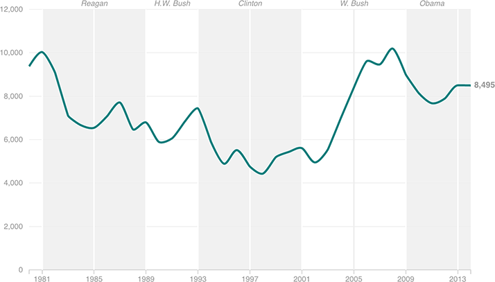

Does Anyone Ever Move To Canada For Political Reasons?
The number of U.S. citizens who become Canadian permanent residents each year saw its most pronounced jump in the 2000s.

Notes
2014 figure is a preliminary estimate.